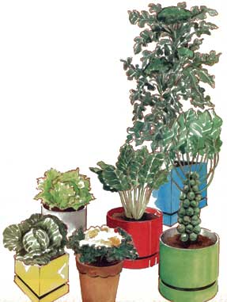

Folks without greenhouses-even apartment dwellers-can enjoy homegrown vegetables with . . .
Charles G. Loeb Jr. It's a typically bone-chilling winter day in southern New York State, with the mercury huddled at 20°F and six feet of crusty snow on the ground. Yet I've just picked some fresh Swiss chard for tonight's dinner! In another day or so, I'll gather some kale. I harvested tender, green broccoli a week ago, and-a few days before that-picked brussels sprouts.
No, I don't have a greenhouse, or even a cold frame. My crops are all grown in containers. I start them in late summer, let them reach maturity outdoors, then bring them inside when frost threatens.
The "green thumb bug" bit me a few years ago, when I first experimented with indoor plantings of tomatoes and cucumbers. Then in 19811 rented a warehouse for my wholesale and mail-order spice business and decided to set up a rather ambitious container garden on the piece of asphalt pavement that came with the lease. During that summer my wife and I savored tomatoes, zucchini, peas, beans, kale, okra, chard, lettuce, and broccoli . . . all from my 200-square-foot plot of pots.
After the first hard frosts, I moved the remaining few containers of kale to the attic. I didn't really expect the plants to survive, because the single, east-facing window there receives only three to four hours of sunlight (when there is any) during the short days of fall and winter. Moreover, since I only use the warehouse for a few hours each week, I keep the temperature there below 50°F.
I was flabbergasted, therefore, at seeing how the kale flourished. My family ate one plant in January and another in February, and-later that month-I put the remaining two back outside. They seemed to almost spread their leaves to the cool late-winter sunshine and, in early April, yielded a bumper crop of greens.
With that experience behind me, I decidedin the spring of 1983-to plant enough containers to provide my family with fresh vegetables at least once a week through the cold months and early spring. Although I concentrated on crops that would grow back after harvesting (chard, kale, and broccoli), I also planted brussels sprouts and cabbage (which store well) and two varieties of lettuce. All in all, I put in about 60 plants, staggering the sowings so that each vegetable would be fully grown by October 1.
We had an unusually mild fall, and Jack Frost didn't move in until mid-December . . . but when he came around, he seemed determined to make up for lost time! Like much of the rest of the country, we had the coldest Christmas on record. By then, of course, my plants were safely upstairs. I put shelves across the window and placed the best specimens on them, to make the most of whatever sun we were blessed with. I arranged the rest' of the plants on the floor . . . where they had to settle for a thin ray of light that made a slow arc from 8:00 AM until noon. (During the late afternoon, I actually had to turn on a light to find anything in the 60-square-foot attic.)
Even so, our nine chard plants were very productive, and we ate their greens once a week. By February, the leaves were small, but new growth continued. If anything, the baby shoots were more tender and tasty than the early pickings. The 30 regular kale plants and the five of the flowering types (which are as tasty and more colorful than the standard kind) also produced weekly harvests right up until I was able to pick outdoor crops in the early spring.
The broccoli, too, was a delightful surprise. Each of the ten plants produced scores of small but delectable sprouts. However, there weren't quite enough for a full meal at each picking, so this winter I'll plant more. The three cabbage plants weren't expected to grow inside, and they didn't. But one small head made some delicious cole slaw, and the other two, which were put outside in early spring, were ready to pick in just a few weeks. My five brussels sprout plants were harvested by late January.
In the course of my experiments with winter container gardening, I've picked up some general knowledge that I would like to pass on.
Pots: Almost anything will do, from plastic milk containers to redwood planters, as long as they're big enough and have drainage holes in the bottom. However, I prefer plastic pots that are squared off at the bottom to allow the plant roots to spread. These are also lighter than clay pots (you may be moving them a lot), and they do a better job of reducing evaporation. Containers 8" to 11 " in diameter-which can be purchased from most garden supply stores for about $1.25 to $2.00 - proved to be adequate for all the types of produce I've grown so far.
Soil: I use regular potting soil, which costs about $3.00 for 40 pounds and can be used over and over again as long as a good fertilizer is applied at regular intervals. Each 11 " pot for broccoli needs about 20 pounds of soil. The other plants can be grown in smaller containers. (You could also, of course, mix your own potting medium . . . recipes can be found in many garden books.)
Watering: When outside in the summer, container-grown plants generally need water at least once a day. I don't use saucers outdoors, but they're essential indoors to protect your floors. In winter, a soaking every week or so is usually enough . . . but do check your plants more often than that. If they feel dry, douse them. Mature vegetables tend to get thirsty, and they won't suffer if they have "wet feet."
Fertilizing: Generally speaking, you will have to feed your pot-grown vegetables more often than you would garden plants, because the frequent watering washes away the nutrients. If you use a fertilizer that must be scratched into the dirt, be careful not to damage your plants' roots. If they become exposed, sprinkle the fertilizer over the surface and then cover it with more potting soil. Feeding should be done every week or biweekly while the plants are outside, but it can be discontinued during the winter.
Sunlight: Leafy crops need at least six hours of sunlight in the summer, and flowering plants should have two or three hours more. If one location isn't bright enough, simply move the pots to follow the sun. Once they're mature and indoors, though, this factor isn't as critical. They'll pretty much make do with what's available until you're ready to harvest.
Swiss Chard: This superproductive green just doesn't know when to quit! It's the only vegetable that grows equally well in cool or hot weather. I'm now eating chard that I started in April, and it's just as flavorful as the small sowing I made in August. I've had best results with Lucullus Light Green (available from George W. Park Seed Company, Box 31, Greenwood, SC 29647, and other companies). There's another fine variety, Rhubarb Chard, that has red veins and stems and makes an attractive companion to the green species. If you plant chard in an 8" pot around the end of July and keep the leaves picked before they reach 15" in length, you'll be rewarded with copious production. Fifteen plants are more than enough to allow a family of four to dine on this delicacy about once a week. Chard is tolerant of light frost, but why take a chance? Bring it inside when the season's first freeze is predicted.
Kale: "What is it?" and "Can you eat it?" are the typical questions visitors ask when they first see my spectacular flowering kale. This showpiece vegetable would be a standout in any ornamental garden, yet it's just as tasty as regular kale.
It forms a tight head with a creamy white center that's surrounded by less compact, green outer leaves. There's another variety that's red-on-green (Frizzy Red, from Park). I think these plants are too pretty to disfigure by partial picking, but when each full head is harvested, it'll provide up to four portions. I also grow the standard kale, which continues producing after the outer leaves have been cut. Kale should be grown in 6" to 8" pots and started in mid-July. The cool fall weather brings out the color, and the vegetable actually needs several nights of frost to make it sweet. In fact, it's one of the most frosttolerant of vegetables.
Broccoli: The sprouting types are the most prolific. After producing small main heads, they'll send out side shoots over a long period of time. These get smaller following each picking, but their taste sure holds up! I'd recommend Green Goliath from Burpee (W. Atlee Burpee Company, 300 Park Ave., Warminster, PA 18991). But remember that, because broccoli has deep roots, it will require a big 11" pot. I sow my winter crop in midJuly and have found that broccoli can take some frost.
Lettuce: I'm partial to Park's Mission, which has a head that doesn't always form up if planted in mid-July for winter pickings. Even so, it's just as good as any loose-leaf lettuce I've ever grown. In addition, I grow Bibb, which has small but sweet heads. Since lettuce roots are shallow, a 6° pot is fine. I don't risk any frost with lettuce. Even in the protection of the attic, the outer leaves tended to turn brown, but we were still able to have fresh salads through most of January.
Cabbage: 1983 saw my first attempt at growing this vegetable. I was given some seeds but didn't learn what variety they were. This season, I'm experimenting with Park's Darkri, a fast-growing, medium-heading variety. Last year I started cabbage in mid-July in 8" pots. The plants seemed to hold up nicely indoors.
Brussels sprouts: Like kale, these minicabbages taste sweeter after a few nights of frost. Sprouts require a long growing season and should be started early in July. My 19831984 choice was Burpee's Long Island Improved, which yielded a profusion of sweet, tender-but only marble-size-sprouts, which we were able to enjoy until the end of February. A friend at the New York Horticultural Society suggested that the stunted size of the sprouts probably resulted from the unusual sustained heat our part of the country suffered during the outdoor growing season. For the winter of 84/85, I'm trying jade Cross E Hybrid from Burpee, which should yield bigger heads.
INDOOR FARMING FOR HOMEOWNERS
The light and heat in my warehouse attic (and the absence of available space in my apartment) limit the varieties of crops that I can grow. But homeowners-even those who can't install greenhouses-can combine artificial lights with higher indoor temperatures to insure fine harvests in attics, basements, or spare rooms. After all, there's no spacing problem with containers. Just put the pots side by side, touching one another. And, especially if you have shelves, a surprising number of plants can be placed in a relatively small area to yield a greater bounty per square foot than many outdoor gardens.
Whether your harvest is large or small, though, you'll be sure to welcome the marvelous taste, nutrition, and freshness your homegrown produce will provide. You'll experience the fun and satisfaction of being just a bit more self-sufficient, too.
|
 |
|
|